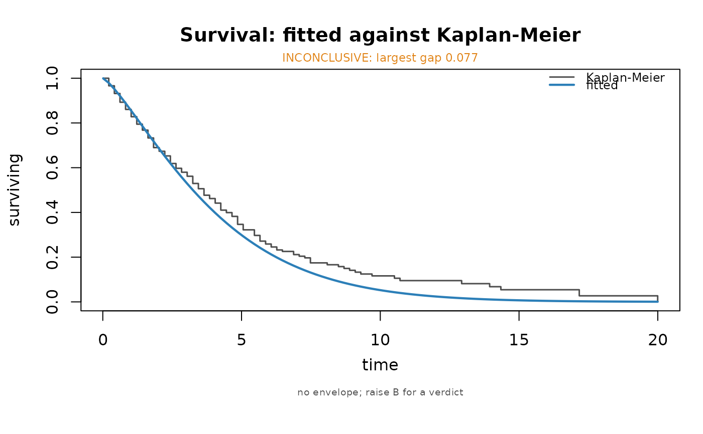

Draws the fitted survival curve over the non-parametric estimate, which is the check that the family was the right choice: the Kaplan-Meier makes no assumption about the shape of the baseline, so where the two part company, the parametric assumption is what is wrong.
Usage
ilm_plot_survival(
object,
time,
event,
by = NULL,
B = 60L,
conf = 0.95,
ncores = 1L,
seed = 1L,
progress = NULL,
colour = "#2C7FB8",
fill = "grey85",
alpha = NULL,
size = 1,
main = NULL,
verbose = TRUE
)Arguments
- object
A fitted
"ilm_model"with an accelerated failure time family.- time, event
The follow-up used to fit it. With
eventmissing it is taken from the model's censoring specification.- by
Optional grouping variable, one value per observation: one fitted curve and one Kaplan-Meier per level.
- B
Simulated datasets behind the envelope;
0to skip it.- conf
Confidence level for the Kaplan-Meier band when
B = 0.- ncores
Worker processes for the refits.
- seed
Random seed.
- progress
Show a progress bar. Defaults to
interactive(), so a bar appears when someone is watching and nothing is written in a script or a knitted document. See ilm_progress_arg.- colour, fill, alpha, size
Appearance.
- main
Title.
- verbose
Print the verdict.
Value
Invisibly, a list with the fitted curve, the Kaplan-Meier, the
largest gap between them and a status.
What the envelope is
The Kaplan-Meier of a finite sample wobbles, so a fitted curve that tracks it
to within that wobble is not evidence of anything. The grey band is the
spread of the Kaplan-Meier across datasets simulated from the fit and
refitted, which is the same reference every other check in this package uses.
With B = 0 the band is omitted and only the two curves are drawn.
Examples
set.seed(1)
d <- data.frame(x = rnorm(300))
tt <- exp(1.5 + 0.8 * d$x + 0.7 * log(rexp(300)))
ct <- rexp(300, rate = 1 / (2 * median(tt)))
d$time <- pmin(tt, ct); d$event <- as.integer(tt <= ct)
f <- ilm_model(time ~ x, data = d, family = "weibull",
censor = ilm_surv(d$time, d$event), verbose = FALSE)
ilm_plot_survival(f, d$time, d$event, B = 0)

#>
#> survival curve against Kaplan-Meier (0 refits)
#> largest vertical gap: 0.0772
#> INCONCLUSIVE